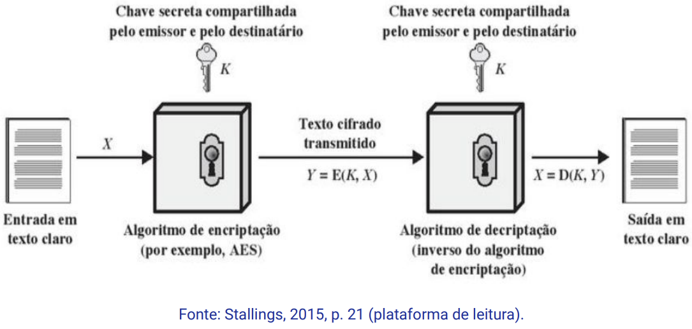
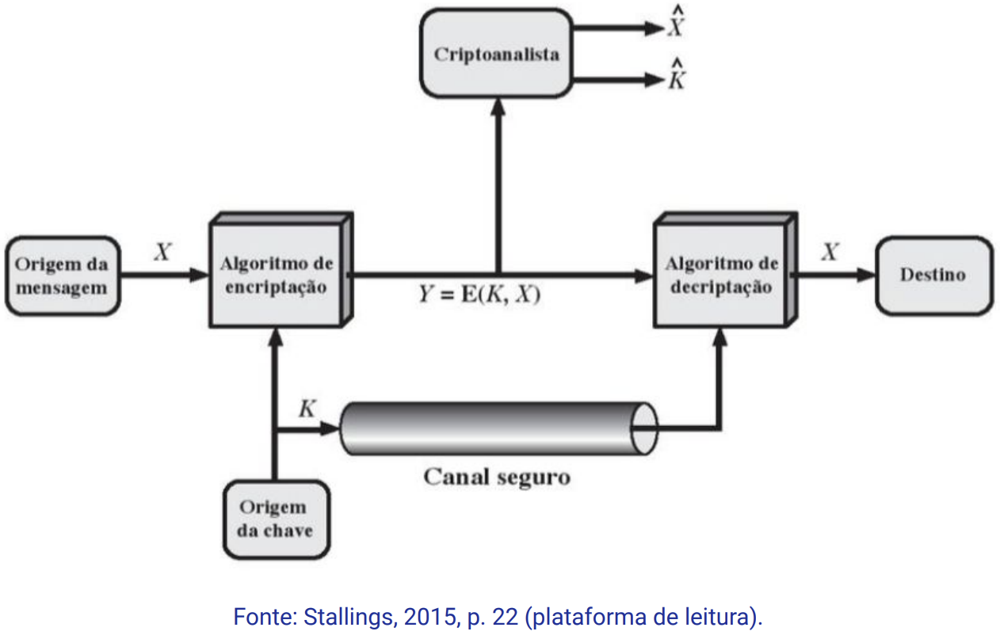
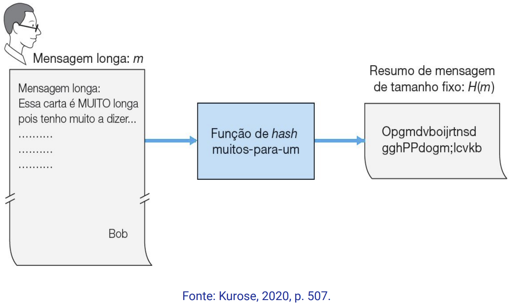
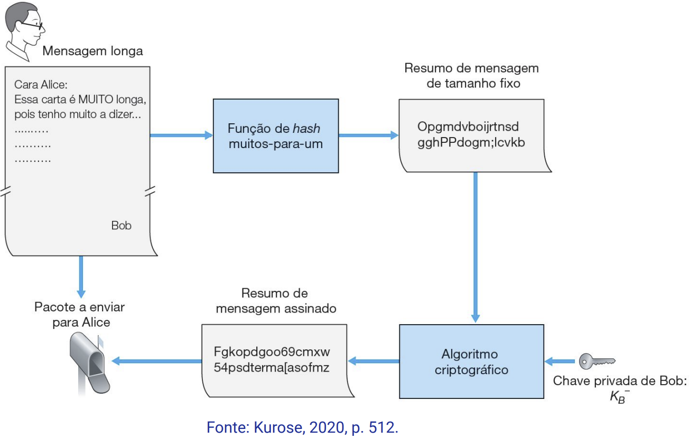
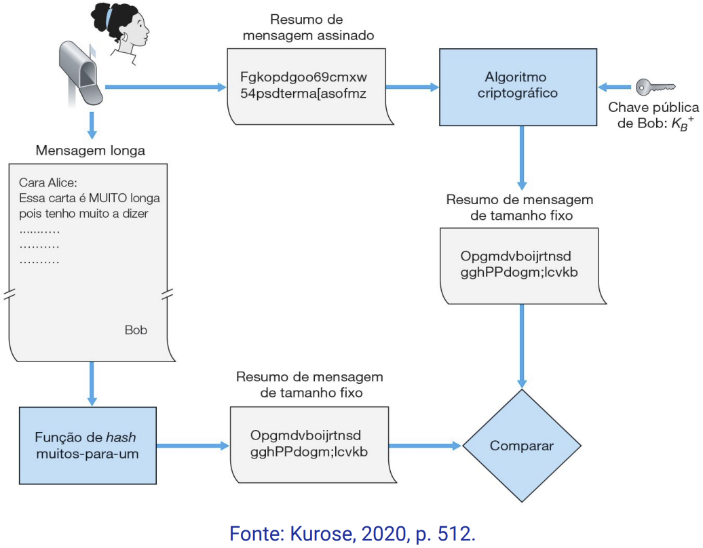
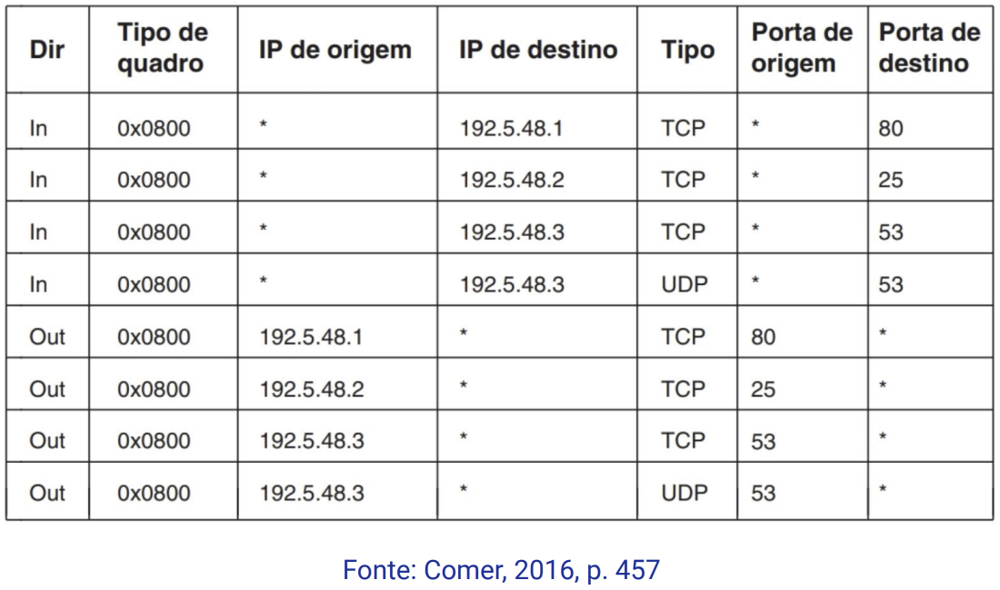

Disciplinas
INFRAESTRUTURA PARA SISTEMAS DE SOFTWARE Concluído
Materiais
Vídeo 1 - [UFMS Digital] Infraestrutura para Sistemas de Software - Módulo 3 - Unidade 2 - Os princípios e mecanismos de segurança nas redes sendProf.° ministrante: Carlos Alberto da Silva
Conteúdo
Os princípios e mecanismos de segurança nas redes
- Princípios de segurança da informação
- Criptografia
- Mecanismos de segurança
- Firewall
Princípios de segurança da informação
Princípios de segurançaDevemos garantir os princípios de segurança para:
- Confidencialidade;
- Integridade;
- Disponibilidade;
- Autenticidade;
- Não-repúdio.
- Segurança computacional
- são políticas, mecanismos e ferramentas que visam proteger e garantir os princípios de segurança para as informações.
- Cyber Security
- é prática de proteger os dispositivos das redes contra ameaças do tipo:
- crime virtual;
- ataque cibernético;
- terrorismo cibernético.
Ataques podem ser do tipo:
- Malware (Software malicioso)
- Vírus, Cavalos de Troia, Spyware, Ransomware, Adware e Botnets.
- Injeção de SQL
- Phishing
- Ataques "man-in-the-middle"
- Ataque de negação de serviço (Denial-of-service, DoS/DDoS)
Dicas de cibersegurança para proteger-se contra ataques cibernéticos:
- Atualize seus softwares e os sistemas operacionais;
- Evite usar redes Wi-Fi não seguras em locais públicos;
- Não abra anexos de e-mail de remetentes desconhecidos;
- Não clique em links ou e-mails de remetentes desconhecidos ou em sites não familiares;
- Use um software antivírus;
- Use senhas fortes.
Criptografia.
A criptografia tem o objetivo de garantir os princípios de segurança por meio de:
- algoritmos de encriptação e desencriptação;
- algoritmos de assinatura digital;
- algoritmos de certificado digital;
- algoritmos de hash.
Criptografia deve proteger as informações:
- em repouso;
- em trânsito;
- ou em uso.
Os algoritmos de encriptação podem ser agrupados em:
- Encriptação simétrica: utilizada para ocultar o conteúdo dos blocos ou fluxos contínuos de dados de qualquer tamanho:
- Utilizando uma única chave.
- Encriptação assimétrica: usada para ocultar pequenos blocos de dados:
- Utilizando uma chave pública e uma chave privada.
Mecanismos de segurança
Modelo OSI específica serviços de segurança para:
- Certificado digital;
- Assinatura digital;
- Controle de acesso;
- Autenticação;
- Autorização;
- Auditoria;
- Detecção de eventos relevantes à segurança;
- Recuperação de segurança.
Uma única chave K é utilizada para:
- encriptar / cifrar os dados;
- em seguida, para decripatação / decifrar os dados.
Exemplo:
 Canal seguroDeve haver um canal seguro para o transporte da chave K para utilizada no destino.
 Técnica de encriptação assimétrica (pública)Os algoritmos assimétricos contam:
- Chave Pública para encriptação;
- Chave Privada (uma chave diferente) para a decriptação:
- Diferente da pública, porém relacionada;
- Exemplo:
- números primos;
- curvas elípticas.
Criptossistemas de chaves assimétricas (pública)
- Qualquer uma das duas chaves relacionadas pode ser usada para encriptação com a outra para a decriptação.
- Estabelecendo um canal seguro de comunicação entre um cliente-servidor, exemplos:
- Aplicativos bancários na Web;
- Comércio eletrônico.
Exemplo:
 Assinaturas digitais
Assinaturas digitais
A assinatura digital precisa garantir as características:
- verificar o autor, a data e hora da assinatura;
- autenticar o conteúdo no momento da assinatura;
- ser verificável por terceiros para resolver disputas.
Função HASH criptográficas:
Enviando um documento assinado digitalmente:
Verificando um documento assinado digitalmente:
Requisitos de assinatura digital:
- Deve impedir falsificação e negação.
- É preciso ser relativamente fácil para produzir a assinatura digital, reconhecer e verificar a assinatura digital.
- É preciso ser computacionalmente inviável falsificar uma assinatura digital.
Refere-se a técnica de assinatura digital que envolve apenas as partes em comunicação (origem, destino).
- Esta técnica utiliza encriptação de chaves assimétrica.
Princípios de Autenticação de usuário remoto
- A autenticação do usuário é a base para:
- Controle de acesso;
- Irretratabilidade do usuário (não repúdio).
- Definida pela RFC 4949.
Autenticação é o processo de verificar uma identidade alegada por ou para uma entidade do sistema.
Um processo de autenticação consiste em duas etapas:
- Etapa de identificação;
- Etapa de verificação.
As formas de autenticação da identidade de um usuário podem ser:
- Algo que o indivíduo sabe (senha, PIN);
- Algo que o indivíduo possui (token);
- Algo que o indivíduo é (biometria estática);
- Algo que o indivíduo faz (biometria dinâmica).
Firewall
Dispositivos de segurançaA segurança lógica se preocupa com os dados que trafegam na rede e provê sistemas de segurança para:
- Firewall;
- Sistemas de Detecção de Intrusos (IDS);
- Sistemas de Prevenção de Intrusos (IPS).
Tem a função de autenticar e de autorizar o tráfego da rede:
- Isola a rede interna (intranet) da rede externa (internet).
- Basicamente filtrando o tráfego TCP/IP.
- Por meio regras de entrada (In) e de saída (Out).
Pode ser um dispositivo do tipo:
- um servidor com função de roteador com duas placas de rede:
- isolando uma rede da outra;
- ou um roteador com Firewall.
Analisa os cabeçalhos dos pacotes IP:
- IP de origem;
- IP de destino;
- Portas de origem;
- Porta de destino;
- Tráfego de Entrada;
- Tráfego de Saída.
Não analisa o conteúdo dos pacotes (dados).
Firewalls de nível de aplicação (proxy servers)
- Intercepta a solicitação de informação (tráfego recebido) e envia as respostas às aplicações correspondentes;
- permite a auditoria do controle do tráfego que passa por ele.
Sistemas de Prevenção de Intrusos (IPS)
- É um sistema passivo;
- Monitorar uma rede em busca de eventos que possam violar as regras de segurança dessa rede.
Sistemas de Detecção de Intrusos (IDS)
- É sistema ativo;
- Projetado com o objetivo de bloquear automaticamente a atividade maliciosa.
⇒ como encerramento de conexão via envio de pacotes reset.
Referências:
COMER, Douglas E. Redes de computadores e internet. Editora Bookman, 2016. p. 444-464. ISBN 9788582603734. Disponível na Biblioteca Digital da UFMS.
KUROSE, Jim; ROSS, Keith W. Redes de Computadores e a Internet: uma Abordagem Top-down, 8 Edição. Editora Pearson, 2021. ISBN: 9788582605592. p. 493-546. Disponível na Biblioteca Digital da UFMS.
SOUZA, Lindeberg Barros de. Administração de redes locais. 2. São Paulo: Érica, 2020. 1 recurso online. (Eixos). p. 63-64. ISBN 9788536533698. Disponível na Biblioteca Digital da UFMS.
TANENBAUM, Andrew S.; FEAMSTER, Nicholas; WETHERALL, David J.; Redes de Computadores, 6ª Edição. Editora Pearson, 2021. ISBN: 9788582605615. p. 502. Disponível na Biblioteca Digital da UFMS.